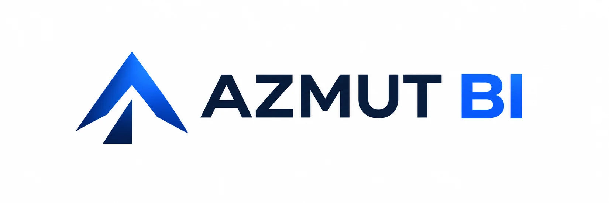
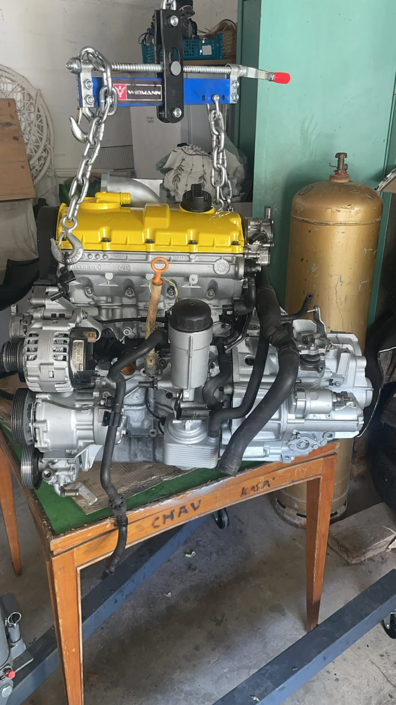
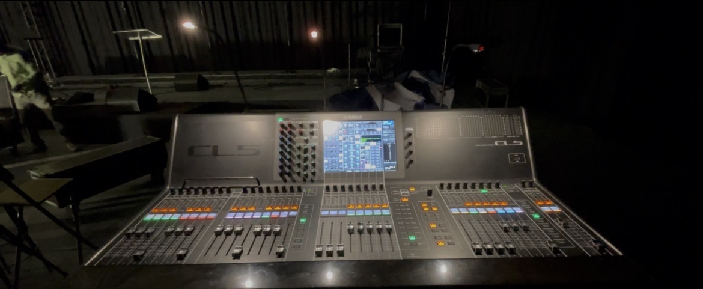

En développement

01 / Data & produit numérique
AZMUT BI
Conception et développement d’une plateforme de reporting, de datavisualisation et d’aide à l’analyse des données.
Business IntelligenceSaaSIA
Je suis Caryl André. Data Analyst de formation, je conçois des solutions numériques, j’explore les technologies et je mène des projets où l’analyse rencontre la pratique.
Chaque projet est présenté pour ce qu’il est réellement : AZMUT BI et YZOCEL Stage sont en cours, en phase de développement ; les autres relèvent de l’expérience pratique ou de la réalisation aboutie.

Conception et développement d’une plateforme de reporting, de datavisualisation et d’aide à l’analyse des données.

Prototype d’intercommunication conçu pour relier musiciens, chantres et régie son au sein d’une même équipe.

Dépose du moteur et reconstruction complète : un projet concret de mécanique automobile documenté en photos.

Créations musicales personnelles : composition, beatmaking et travail des ambiances sonores.

Installation de scène, branchements, balance et mixage en salle ou en direct, en tant que technicien du son / sonorisateur lors de cultes et d’événements comme le Paris Summer Gospel et le Gospel Festival de Paris.
Mon parcours associe ressources humaines, reporting et analyse de données. Mes expériences chez AXA et BNP Paribas m’ont permis de travailler sur la consolidation des informations, la production de tableaux de bord et le suivi d’indicateurs.
Tableaux de bord RH, données sociales, suivi d’indicateurs, prévisions budgétaires et automatisation de fichiers Excel.
Analyse de données, reportings sous Power BI et Tableau, et contrôle de la fiabilité des données budgétaires.
Formation orientée données et intelligence artificielle.
Université Sorbonne Paris Nord.
J’aime comprendre le fonctionnement d’un système, qu’il s’agisse d’un modèle de données, d’une application, d’un moteur diesel ou d’une installation de sonorisation.
Cette curiosité prend des formes différentes : concevoir des outils numériques, remettre un moteur en état, produire de la musique et contribuer au son d’un événement en direct. Ce portfolio rassemble ces expériences sans les confondre.
Je présente chaque projet à son véritable stade d’avancement, en privilégiant les réalisations et les apprentissages concrets.
Pour échanger à propos d’une mission en data, d’un projet numérique ou d’une collaboration, tu peux m’écrire directement.